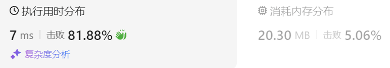
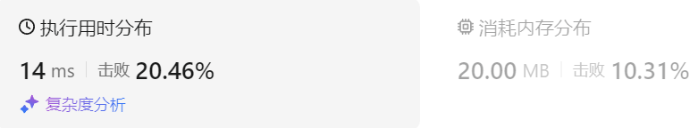
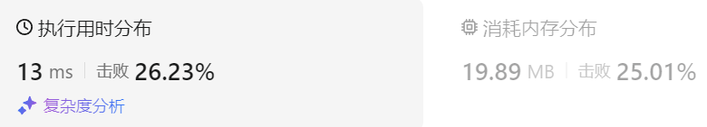
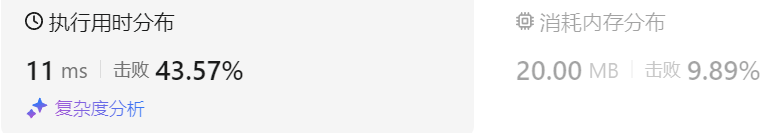

20、验证二叉搜索树（2024071，98题，中等，27min）
给你一个二叉树的根节点 root ，判断其是否是一个有效的二叉搜索树。
有效 二叉搜索树定义如下：
- 节点的左子树只包含 小于 当前节点的数。
- 节点的右子树只包含 大于 当前节点的数。
- 所有左子树和右子树自身必须也是二叉搜索树。
示例 1：

- 输入：root = [2,1,3]
- 输出：true
示例 2：

- 输入：root = [5,1,4,null,null,3,6]
- 输出：false
- 解释：根节点的值是 5 ，但是右子节点的值是 4 。
提示：
class Solution {
public:
void checkBST(TreeNode* cur_node, vector<int>& path){
if(cur_node == nullptr) return;
checkBST(cur_node->left, path);
path.push_back(cur_node->val);
checkBST(cur_node->right, path);
}
bool isValidBST(TreeNode* root) {
vector<int> vec;
checkBST(root, vec);
for(int i = 1; i < vec.size(); i++){
if(vec[i] <= vec[i-1]){
return false;
}
}
return true;
}
};

class Solution {
public:
long long cur_max_val = LONG_MIN;
bool isValidBST(TreeNode* root) {
if(root == nullptr) return true;
bool left = isValidBST(root->left);
if(cur_max_val < root->val){
cur_max_val = root->val;
}else{
return false;
}
bool right = isValidBST(root->right);
return left && right;
}
};

class Solution {
public:
TreeNode* pre = nullptr;
bool isValidBST(TreeNode* root) {
if(root == nullptr) return true;
bool left = isValidBST(root->left);
if(pre == nullptr){
pre = root;
}else if(pre->val < root->val){
pre = root;
}else{
return false;
}
bool right = isValidBST(root->right);
return left && right;
}
};
class Solution {
public:
TreeNode* pre = NULL;
bool isValidBST(TreeNode* root) {
if (root == NULL) return true;
bool left = isValidBST(root->left);
if (pre != NULL && pre->val >= root->val) return false;
pre = root;
bool right = isValidBST(root->right);
return left && right;
}
};

class Solution {
public:
stack<TreeNode*> stk;
bool isValidBST(TreeNode* root) {
TreeNode* cur_node = root;
TreeNode* pre = nullptr;
while(cur_node != nullptr || !stk.empty()){
if(cur_node != nullptr){
stk.push(cur_node);
cur_node = cur_node->left;
}else{
cur_node = stk.top();
stk.pop();
if(pre != nullptr && pre->val >= cur_node->val) return false;
pre = cur_node;
cur_node = cur_node->right;
}
}
return true;
}
};
